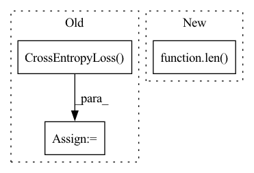

Pattern ID :40365

Before Change
domain_discri = torch.nn.DataParallel(domain_discri).cuda()
// define loss function (criterion)
criterion = nn.CrossEntropyLoss().cuda()
domain_adv_loss = models.DomainAdversarialLoss(domain_discri).cuda()
best_acc1 = 0.
After Change
train_source_iter = ForeverDataIterator(train_source_loader)
train_target_iter = ForeverDataIterator(train_target_loader)
if args.iters_per_epoch is None:
iters_per_epoch = max(len(train_source_loader), len(train_target_loader))
else:
iters_per_epoch = args.iters_per_epoch
// define loss function
In pattern: SUPERPATTERN
Frequency: 3
Non-data size: 3
Instances
Fragment ID: 114528643
Project Name: thuml/transfer-learning-library
Commit Name: 41201cdca3be83e7eea76cc810bfc332935e5d98
Time: 2020-02-21
Author: JiangJunguang1123@outlook.com
File Name: examples/dann.py
M Class Name: AnonimousClass
N Class Name: AnonimousClass
M Method Name: main(1)
N Method Name: main(1)
M Parent Class:
N Parent Class:
M File Name: examples/dann.py
N File Name: examples/dann.py
M Start Line: 58
M End Line: 103
N Start Line: 57
N End Line: 99
'>
Before Change
self.global_avgpooling = torch.nn.AdaptiveAvgPool1d(1)
// 损失函数, loss
self.loss_type = self.graph_config.loss_type if self.graph_config.loss_type else "BCE"
self.loss_ce = torch.nn.CrossEntropyLoss(ignore_index=0)
self.loss_mlsm = torch.nn.MultiLabelSoftMarginLoss() // like BCEWithLogitsLoss
self.loss_bcelog = torch.nn.BCEWithLogitsLoss()
self.loss_bce = torch.nn.BCELoss()
self.loss_mse = torch.nn.MSELoss()
After Change
super(TCGraph, self).__init__(self.pretrained_config)
if self.graph_config.is_train:
self.pretrain_model = pretrained_model.from_pretrained(graph_config.pretrained_model_name_or_path, config=self.pretrained_config)
self.pretrain_model.resize_token_embeddings(len(tokenizer))
else:
self.pretrain_model = pretrained_model(self.pretrained_config) // 推理时候只需要加载超参数, 不需要预训练模型的权重
self.pretrain_model.resize_token_embeddings(len(tokenizer))
'>
Fragment ID: 114528641
Project Name: yongzhuo/pytorch-nlu
Commit Name: d3946801ec80f6f92ff2bd08b9cb342f904934c2
Time: 2023-02-02
Author: 2714618994@qq.com
File Name: pytorch_nlu/pytorch_textclassification/tcGraph.py
M Class Name: TCGraph
N Class Name: TCGraph
M Method Name: __init__(3)
N Method Name: __init__(2)
M Parent Class: BertPreTrainedModel
N Parent Class: BertPreTrainedModel
M File Name: pytorch_nlu/pytorch_textclassification/tcGraph.py
N File Name: pytorch_nlu/pytorch_textclassification/tcGraph.py
M Start Line: 27
M End Line: 56
N Start Line: 16
N End Line: 42
'>
Before Change
if model_cfg["SMOOTHING"] > 0:
criterion = LabelSmoothingLoss(model_cfg["NUM_CLASS"], smoothing=model_cfg["SMOOTHING"])
else:
criterion = thnn.CrossEntropyLoss()
criterion = criterion.to(device)
global_step = 0
best_record = {"epoch": -1, "train loss": -1, "train acc": 0.0, "val loss": -1, "val acc": 0.0}
After Change
val_dataloader = get_dataloader(dataset_cfg, graph, val_nid, drop=False)
train_num = math.ceil(len(train_nid) / dataset_cfg["BATCH_SIZE"])
num_train_optimization_steps = (int(train_num + dataset_cfg["GRADIENT_ACCUMULATION_STEPS"] - 1)
/ dataset_cfg["GRADIENT_ACCUMULATION_STEPS"]) * dataset_cfg["EPOCHS"]
'>
Fragment ID: 114528639
Project Name: langgege-cqu/maxp_dgl
Commit Name: f1f10fccf1844722311242e00bfefcc9f4d1caf6
Time: 2021-11-21
Author: 8747734+bugczw@user.noreply.gitee.com
File Name: maxp_model_czw/train_yaml.py
M Class Name: AnonimousClass
N Class Name: AnonimousClass
M Method Name: train(6)
N Method Name: train(4)
M Parent Class:
N Parent Class:
M File Name: maxp_model_czw/train_yaml.py
N File Name: maxp_model_czw/train_yaml.py
M Start Line: 212
M End Line: 256
N Start Line: 216
N End Line: 265